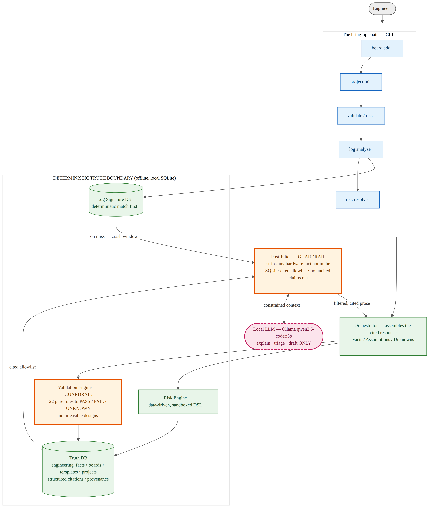
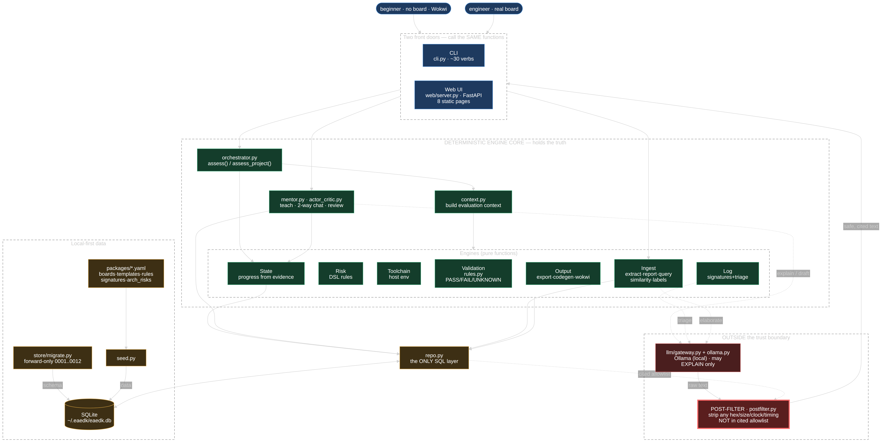
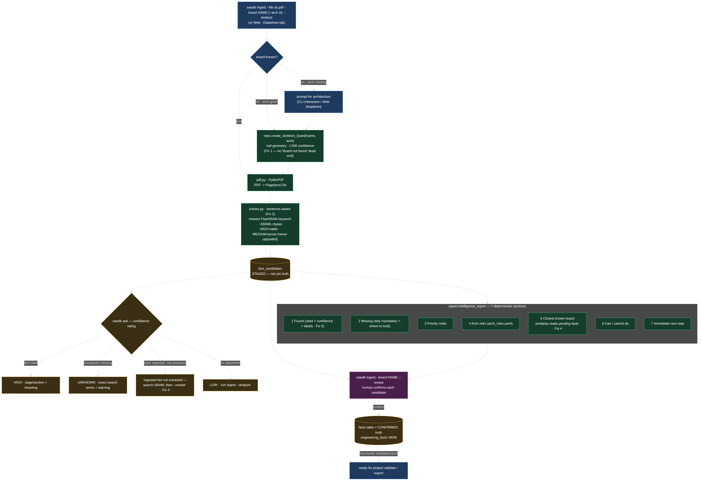

Part I — Foundation
Chapter 1 — What EAEDK Is (and Is Not)
EAEDK stands for Embedded AI Engineering Development Kit. It is a local-first, offline-only platform that helps a firmware engineer go from "I have a board, or a datasheet" to "a validated, buildable project" — without an AI ever inventing a hardware fact that destroys the board.
A note on accuracy. This guide is about a system whose entire purpose is to never state an unverified fact. So every number in it was taken from the source tree, not from memory: 22 validation rules, 4 risk rules, 15 log signatures, 14 seeded boards, 8 templates, 14 golden evaluation cases, 12 migrations, 263 passing tests. The CLI is built on Python's standard-library
argparse; the optional browser UI is FastAPI serving plain HTML. There is no Tauri desktop app and no Typer dependency. If a statement here ever disagrees with the code, the code is correct.
The problem it solves
Firmware is software that runs directly on a microcontroller or processor, with little or no operating system beneath it. Writing it is unlike writing a normal program, because the code must match the exact hardware: the right memory addresses, the right clock, the right way to switch each peripheral on. Get one wrong and the board does not raise an error — it simply does nothing, resets in a loop, or appears dead.
The hardest part of starting firmware is not writing code. It is knowing what to check before writing any code at all. This is the "I don't know what I don't know" problem.
A concrete example. A beginner buys a two-dollar STM32F103 "Blue Pill," copies a blink tutorial from YouTube, changes a pin number, builds, flashes — and the LED stays dark, with no error. They cannot tell whether the fault is the clock (on an STM32 every peripheral is off at reset; you must enable a GPIO port's clock before touching its pins), the boot pins (the BOOT0 pin decides where the chip starts executing), the vector table (the interrupt-handler table must sit at the start of flash, aligned), the link address (code must be linked to run from 0x08000000, where this chip's flash lives), or the build target (a compiler aimed at a PC produces a binary the chip cannot run). An experienced engineer asks all of these automatically. A beginner does not know the questions exist. EAEDK's job is to know that list, ask it, check the answers it can check deterministically, and be honest about the rest.
The same structure exists higher up. A mid-level engineer bringing up Linux must verify DDR memory timing before the system boots stably, place the kernel and device-tree blob at non-conflicting RAM addresses, and configure a serial console or have no way to see what failed. Different words, identical shape: a list of things that must be right before first boot, most of which fail silently when wrong.
What EAEDK is
A local-first, offline embedded engineering validation and mentoring platform. Local-first means everything runs on your own machine; the knowledge is a single database file; there is no cloud, no account, no per-request cost, and it works air-gapped. (The one optional component — a local language model — also runs on your machine.) Validation and mentoring means EAEDK checks engineering decisions against hardware facts and teaches a beginner the order to learn things and the questions to ask.
Internally, EAEDK is a system where the deterministic engines hold the truth and the language model only explains. This inversion is the single most important idea in the project, and Chapter 2 is devoted to it.
What EAEDK is not
Being explicit about boundaries is more useful than a feature list. EAEDK is not a replacement for reading datasheets (it makes you faster at reading the right pages, not able to skip them); not a guarantee of correct firmware (it checks what it has rules for; a project that passes every check can still have bugs it has no rule for); not a cloud service; not a general-purpose AI assistant (the optional model is fenced to explaining EAEDK's own results); and not a debugger or flashing tool (it generates the commands; it does not talk to your board).
Key design principles
- Local-first and offline-only. All data in one SQLite file; no per-token cost; works air-gapped. The quality ceiling of a small local model is acceptable precisely because the model is not the source of truth.
- Deterministic engines at the core. All hardware validation is pure functions returning PASS, FAIL, or UNKNOWN. They never call the model and never invent missing data.
- Structured provenance. Every fact carries a citation chain: source document, page, section, verification status. No fact exists without provenance.
- Confidence is capped, not configured. A board with any unknown core field can never be marked HIGH confidence. Confidence is derived from completeness, not chosen.
- Evolve, not fork. Facts live in one polymorphic layer with structured citations; board identity stays typed for fast, safe rule lookups.
Who it is for
EAEDK serves a range of experience levels, and for each there is a point where its value ends and your own engineering begins.
- Level 0 — complete beginner. Gets the ordered list of what to learn first, the "think before you code" questions for their exact board, and a path to a blinking LED in a free online simulator with no hardware. Value ends where original hardware design or non-trivial application logic begins.
- Level 1 — hobbyist with some Arduino/ESP32 experience. Gets the jump from "copy a sketch" to understanding clocks and memory layout, and honest answers about a board they have not used. Value ends at advanced peripheral work where EAEDK has no specific rule.
- Level 2 — junior engineer, 0–2 years. Gets a pre-flight checklist that catches the classic mistakes (image too big for flash, overlapping regions, wrong toolchain) before a day is lost, plus cited facts for code review.
- Level 3 — mid-level engineer doing Linux bring-up and driver development. Gets DDR-timing-verified gating, kernel/DTB load-address checks, and project-aware log triage that correlates a boot failure against the project's own unverified assumptions.
The common thread: EAEDK is strongest at the start of a project and at the failure of a boot, and weakest — by design — in the middle, which is your genuine engineering work.
Chapter 2 — The Trust Philosophy
The entire design exists to enforce one rule: the language model may explain, triage, and draft; it may never assert a hardware fact the database has not verified. This chapter explains why that rule, and how it is enforced structurally rather than by good intentions.
The traditional AI model: trust the oracle
Conventional AI coding assistants treat the model as an oracle: you ask, it answers, you verify by hand. This works tolerably for software, which is forgiving — a wrong function call yields a compile error or an exception, not physical damage.
Embedded hardware is unforgiving. A wrong register address can disable thermal protection; an incorrect clock divider can overclock a CPU past its rating; a misconfigured pin can short a power rail. The oracle model also places an impossible burden on the engineer: when a model emits twenty register settings for a peripheral, each must be checked against the datasheet, which is tedious, error-prone, and defeats the point of using assistance.
The EAEDK model: trust the engine
EAEDK inverts the arrangement. Instead of trusting the model and verifying by hand, you trust deterministic engines and use the model only as an explainer. The engines do mathematical verification that is beyond human slip: that an address falls within a valid range, that partitions do not overlap, that an image fits in flash. When EAEDK reports that a configuration passes, you can trust the conclusion because it rests on arithmetic, not model weights. When it reports UNKNOWN, you know a required value is missing.
This is analogous to a compiler: the optimizer can be complex and heuristic, but the correctness checks must be simple and absolute. EAEDK makes the model the optimizer and the engines the verifier.
Two guardrails: input and output
Two deterministic gates fence the model in. The first is the Validation Engine (the input guard): 22 pure-function rules return PASS, FAIL, or UNKNOWN over typed board data — flash and RAM capacity, vector-table alignment, partition fitment, DDR-timing-verified, power sequencing, pin-mux conflicts, the secure-boot chain, and more. A host with no arm-none-eabi-gcc makes a Cortex-M project NOT FEASIBLE, with a one-line fix. UNKNOWN is a hard blocker, not a soft pass; infeasible designs are never recommended.
The second is the Post-Filter (the output guard): every model response is scanned, and any hex address, memory size, clock frequency, or timing value not in the SQLite-cited allowlist is removed and replaced with a verification marker. Frequencies and timings are never stored in the database without explicit human verification, so the model can never slip an invented timing through.

Figure 2.1 — The trust boundary. Deterministic engines (left) hold the truth; the local model (lower right) sits outside and reaches the engineer only through the Post-Filter. The Validation Engine gates what enters; the Post-Filter strips any uncited hardware value before it leaves.
Facts, assumptions, and unknowns
Every response carries a fixed schema that separates three kinds of knowledge. Facts are HIGH-confidence parameters backed by citations. Assumptions are MEDIUM or LOW confidence, from incomplete verification or inference. Unknowns are required parameters not yet provided or verified. This taxonomy makes uncertainty explicit and actionable rather than hidden inside a model's uncalibrated confidence. When EAEDK does not know something it says so, when it assumes it labels the assumption, and when it has verified a fact it shows the citation.
The mentor layer: teach, not just flag
A status flag tells an expert what is wrong and leaves a beginner stuck. So every toolchain or validation FAIL and UNKNOWN carries a one-line teach message: what the field is, its units, where to find it, and what breaks without it. When a toolchain check fails because the detected compiler targets x86_64 instead of ARM, EAEDK does not merely report FAIL — it explains that Cortex-M is bare-metal ARM (Thumb), that the host GCC cannot build for it, and that the fix is to install gcc-arm-none-eabi. These messages are curated data, not model output, so they are accurate and available offline.
Chapter 3 — Architecture Overview
EAEDK is a modular system with a clear separation between deterministic engines, the knowledge layer, and the optional model. This chapter is the map.
System architecture
Two front doors call the same engine functions: the CLI (argparse, the primary interface) and an optional Web UI (FastAPI serving plain hand-written HTML). The orchestrator coordinates a request by running deterministic engines first and the model gateway last. The engine layer holds validation, risk, toolchain, ingest, log, output, state, and mentor logic. The knowledge layer is a single SQLite database where every fact carries provenance. The model layer is an optional local LLM reached only through a gateway with a mandatory post-filter.
The hard rule is that the Web UI never owns logic: its route handlers are thin wrappers over the same functions the CLI calls (assess_project, export_project, analyze_log, intelligence_report, answer_query). If logic lived in two places the interfaces would drift and give different answers for the same project. One engine, two skins.
Core package structure
core/eaedk/
cli.py the CLI (argparse) — every verb
web/ the optional FastAPI Web UI (thin wrappers) + static HTML
orchestrator/ deterministic-first assembly of the fixed response schema
engines/
validation/ 22 pure-function rules (the trust core)
risk/ data-driven rules over a sandboxed mini-DSL (no eval())
toolchain/ host detection + build-environment validation
logs/ format detection, signature matching, async triage, write-back
output/ feasibility-gated export of real build files + Wokwi
ingest/ datasheet PDF -> cited fact candidates -> 7-section report
state.py progress derived from evidence
llm/ gateway (Ollama) + post-filter + constrained prompts
mentor.py capability maps, learning paths, think-before-code
repo.py the only place SQL lives; record_fact() write-through
store/ SQLite + forward-only migrations
packages/ 14 boards, 8 templates, risk rules, log signatures, eval cases
docs/ architecture, design notes, this guide
demo.sh / demo-full.sh end-to-end demonstrations
The trust boundary
Everything inside the boundary is deterministic: pure-function validation, a data-driven risk DSL, signature matching, and a SQLite store where every fact carries provenance (source, citation page, section, snippet). The model sits outside and reaches the user only through the two guardrails. The Validation Engine gates what goes in (feasibility before any recommendation); the Post-Filter gates what comes out (no uncited hardware claim). The orchestrator assembles the answer by running engines first, gathering facts and citations and confidences, then optionally calling the model with a constrained context.

Figure 3.1 — The complete software flow. Two front doors (blue) call one deterministic engine core (green); every fact passes through repo.py (amber) into local SQLite. The model and the Post-Filter (red) sit outside the trust boundary — the model may explain, but every number it emits is stripped unless the database already cited it.
The bring-up chain
EAEDK implements a complete, auditable workflow — the bring-up chain — from onboarding (board add / ingest), to project creation (project init, automatic template selection and immediate assessment), to deterministic feasibility (validate and risk), to crash triage (log analyze), to closing tracked issues with provenance (risk resolve), to generating real build files (export). Every step writes through one fact layer with structured provenance; no raw SQL lives outside repo.py.
Database architecture
All data lives in one SQLite file at ~/.eaedk/eaedk.db, opened in WAL (write-ahead logging) journal mode with foreign-key enforcement. The schema is built by forward-only migrations stored as numbered SQL files and tracked with PRAGMA user_version; there are no rollbacks (Chapter 20 explains why). Seed data loads from YAML in packages/, not through migrations, so data changes are diffable and reviewable.
Technology stack
Python, with SQLite for storage. The only mandatory runtime dependency is PyYAML. The optional Web UI uses FastAPI; optional datasheet ingestion uses PyMuPDF; the optional local model uses Ollama, defaulting to qwen2.5-coder:3b for CPU-friendly operation. Every optional dependency degrades gracefully when absent: the core works with none of them installed.
Part II — Core Concepts
Chapter 4 — The Truth Layer
The truth layer is the data model that makes EAEDK's guarantees possible — not merely a schema, but a discipline of provenance, confidence, and honesty implemented as storage.
The unified fact store
All hardware facts live in one polymorphic facts table rather than fragmenting across many. A domain column classifies each by engineering dimension: MEMORY (flash, RAM, partitions), CLOCK (oscillator and PLL), PINMUX (pin assignments), POWER (rails and sequencing), TIMING (DDR and bus). A source_type column records how a fact entered: USER_INPUT, DATASHEET, TRM, SDK_DOC, or SCHEMATIC.
The decision to evolve rather than fork this store is deliberate. An early alternative — a parallel table with flattened provenance — was rejected because it would duplicate the sources table, regress the structured provenance the post-filter depends on, and tempt moving typed board identity into generic key-value storage. Instead the existing facts table gained domain and source_type columns, keeping backward compatibility while enabling richer classification.
Structured provenance
Every fact carries a three-tier chain: a source record (document type — datasheet, TRM, errata, manual, web, seed, or user — title, and optional URI or hash), a citation record (page, section, bounding box for future ingestion, and a quoted snippet), and the fact itself. So every parameter traces back to its origin. When a rule checks that a vector table sits within flash, it uses flash_base from the boards table, which was seeded with a citation to the chip's reference manual.
The engineering facts view
A read view, engineering_facts, joins each fact to its citation and source. This is the primary read surface for the engines and the post-filter: every value arrives with its page, section, snippet, and source. The post-filter builds its allowlist by reading values through this view where a citation exists, and it parses JSON-encoded values (partition base/size) so that computed addresses — flash_base plus a partition offset — are included even though they are not stored directly.
Canonical write-through
All fact writes go through one entry point, repo.record_fact. It accepts the board, domain, key and value, source type, confidence, optional kind, citation details, and verification status; it builds the provenance chain (creating or reusing a source, creating a citation, inserting the fact). This single door guarantees that no SQL outside the repository layer can bypass provenance or insert an uncited fact.
Confidence classification
Confidence is HIGH (verified against an authoritative source), MEDIUM (a reliable secondary source or inference), or LOW (an unverified candidate). UNKNOWN is a distinct validation status for a missing required parameter, not a stored board confidence. Confidence is derived, not chosen: a board with any unknown core field can never be HIGH, and a project with any engaged-UNKNOWN gating rule is blocked from a feasible verdict. In embedded engineering, an unknown parameter is a potential board destroyer, so the system errs toward caution.
Consumption patterns
Many components share the truth layer through the same provenance-aware paths: the onboarding wizard writes partition facts through record_fact; the post-filter reads engineering_facts to build its allowlist; the Validation Engine reads board geometry; the log engine correlates a crash against project facts; the datasheet engine stages candidates that only a human can promote. One read path, one write path, one provenance discipline.
Chapter 5 — The Validation Engine
The Validation Engine is the trust core: 22 pure functions that return PASS, FAIL, or UNKNOWN over typed board data and project inputs. They never call the model, never invent inputs, and never make probabilistic judgments.
Validation contract
Every rule takes a context dictionary and returns a ValidationResult with the check name, status, reason, inputs used, failure severity, citations, a gating flag, and a teach string. PASS means the check succeeded; FAIL means a real, specific problem; UNKNOWN means insufficient verified data. A rule is engaged when you have supplied at least one of its inputs (or it needs none) — this separates "not started yet" (surfaced gently as missing information) from "started but unverified" (which blocks). FAIL on a gating rule halts the workflow: the orchestrator refuses a feasible verdict while any gating rule reports FAIL, and there is no override, because a failed validation is a mathematical certainty that something is wrong.
Memory validation rules
FLASH_CAPACITY checks the estimated image fits in flash within a 10% reserve band (inputs: estimated_image_size, board flash size). RAM_BUDGET checks stack + heap + statics fit in RAM within 10% (inputs: stack_size, heap_size, static_size, board RAM) — catching the classic mistake of a giant stack with no compile error, only a runtime crash. VECTOR_TABLE_PLACEMENT checks the vector table sits inside flash and meets alignment: 256 bytes on Cortex-M0/M0+, 512 bytes on M3/M4/M7. Misplaced, the chip faults on the first interrupt.
Layout validation rules
BOOTLOADER_APP_NO_OVERLAP verifies bootloader and application regions are disjoint and both fit in flash — overlap corrupts one image when you flash the other. PARTITION_LAYOUT_FITS checks all partitions fit storage; PARTITION_NO_OVERLAP checks no two overlap; together they prevent OTA updates corrupting adjacent partitions. PARTITION_AB_SYMMETRY enforces equal A/B update slots so either can hold a full image. RECOVERY_PRESENT requires a recovery (or slot_b) partition so a failed update has a fallback.
Address validation rules
LOAD_ADDR_CONFLICT checks the kernel and device-tree load addresses are inside DDR, clear of the DDR-init region, and distinct — preventing the U-Boot hang where the kernel lands in not-yet-initialized memory. BOOT_FLOW_CONSISTENCY verifies the bootloader, kernel, and init addresses are all distinct, catching the contradiction where one stage overwrites the next.
Timing and peripheral rules
DDR_TIMING_VERIFIED checks DDR timing has been confirmed from the datasheet by human review — the leading cause of U-Boot hangs on a new board. CONSOLE_UART_DEFINED checks a debug console is specified for U-Boot and Linux (and a stdout-path for Linux); without it a failed boot is a black box. PINMUX_CONFLICT checks no physical pin is assigned to two signals, which would mean a peripheral silently fails or rails contend. POWER_SEQUENCE checks power rails come up in a valid, unambiguous order, since a bad sequence can hang or damage silicon. The driver-oriented DRIVER_COMPATIBLE_STRING and REGISTER_MAP_PRESENT ensure a Linux driver has its device-tree binding and a human-verified register map.
Toolchain validation rules
TOOLCHAIN_ARCH_MATCH verifies the installed cross-compiler targets the board's instruction set — catching the beginner attempt to build ARM firmware with the host x86 GCC, with a teach message naming gcc-arm-none-eabi. SDK_HOST_OS_MATCH checks an SDK's host-OS requirement. Four SECURE_BOOT_* rules (signature verification, immutable key storage, anti-rollback counter, production debug-lock) guard the secure-boot chain; each engages only on its own input key, so they never affect a project that is not doing secure boot.
Rule catalog reference
The 22 rules span six goal types — bare_metal_app, bootloader, uboot, linux, ota, and driver — and each maps to one or more template checklist items. A checklist item cannot be marked done while its rule reports FAIL or an engaged UNKNOWN, so the checklist is a gatekeeping mechanism, not a passive to-do list.
| Rule | Severity | Goals |
|---|---|---|
| FLASH_CAPACITY | HIGH | all |
| RAM_BUDGET | HIGH | all |
| VECTOR_TABLE_PLACEMENT | HIGH | bootloader, bare_metal_app |
| BOOTLOADER_APP_NO_OVERLAP | HIGH | bootloader, ota |
| PARTITION_LAYOUT_FITS | HIGH | ota, linux |
| PARTITION_NO_OVERLAP | HIGH | ota, linux |
| PARTITION_AB_SYMMETRY | MEDIUM | ota |
| RECOVERY_PRESENT | HIGH | ota |
| LOAD_ADDR_CONFLICT | HIGH | uboot, linux |
| DDR_TIMING_VERIFIED | HIGH | uboot |
| BOOT_FLOW_CONSISTENCY | HIGH | uboot, linux |
| CONSOLE_UART_DEFINED | MEDIUM | uboot, linux, bare_metal_app |
| TOOLCHAIN_ARCH_MATCH | HIGH | all |
| SDK_HOST_OS_MATCH | MEDIUM | all |
| DRIVER_COMPATIBLE_STRING | MEDIUM | driver |
| REGISTER_MAP_PRESENT | HIGH | driver |
| PINMUX_CONFLICT | HIGH | all |
| POWER_SEQUENCE | HIGH | all |
| SECURE_BOOT_SIGNATURE_VERIFY | HIGH | bootloader, ota |
| SECURE_BOOT_KEY_STORAGE | HIGH | bootloader, ota |
| SECURE_BOOT_ROLLBACK_COUNTER | HIGH | bootloader, ota |
| SECURE_BOOT_DEBUG_LOCKED | HIGH | bootloader, ota |
Feasibility calculation
The individual results roll up over gating rules only: any gating FAIL → not_feasible; else any engaged gating UNKNOWN → blocked; else feasible. A separate no_geometry verdict is produced when a board has no flash/RAM at all. The gating flag lets some checks inform without blocking — memory and address rules gate, but a missing debugger or build system is reported with full detail and a fix without declaring the whole design infeasible. A missing or wrong-architecture compiler, by contrast, is HIGH and gating.
Chapter 6 — The Risk Engine
Where validation checks mathematical feasibility, the Risk Engine evaluates data-driven rules to flag concerns that do not violate a hard constraint but deserve a warning.
Risk vs validation
Validation rules are binary truths: does the image fit, does the address fall in range, do partitions overlap. Risk rules are engineering heuristics: is flash above 90% leaving no headroom, is the watchdog unconfirmed, is DDR timing unverified. The difference is consequence — a validation FAIL blocks the workflow, while a risk warning informs the engineer's judgment. A project with HIGH risks can still be feasible, but the engineer should understand and accept them first.
The risk rule DSL
Risk conditions are written in a sandboxed mini-DSL stored as text, supporting comparisons with one arithmetic term — for example estimated_image_size > board.flash_bytes * 0.9, or ddr_timing_verified == 0. The evaluator is a custom parser with no Python eval; it resolves identifiers against project inputs and board facts and returns UNKNOWN for any unrecognized identifier rather than silently skipping. It supports and/or, with the current grammar restricted to a single comparison per side for predictability.
Built-in risk rules
Four rules ship as seed data. FLASH_TIGHT (HIGH) fires when the image exceeds 90% of flash. RAM_TIGHT (MEDIUM) fires when stack + heap exceed 80% of RAM. WATCHDOG_UNCONFIRMED (MEDIUM, bootloader) fires when the watchdog is not confirmed enabled. DDR_GUESSED (HIGH, uboot) fires when DDR timing is unverified, and its explanation explicitly tells the engineer to confirm CAS latency, tRCD, and tRP from the technical reference manual before first boot. Severity drives the summary ordering and the engineer's prioritization.
Risk lifecycle
The risks table holds two different things. Risk-engine findings are ephemeral, recomputed from current inputs on every assessment. Tracked risks (status='tracked') are persistent, written by log write-back from a real boot failure. The split prevents either kind from clobbering the other. eaedk risk show displays both, grouped by status; eaedk risk resolve <id> --note "..." moves a tracked risk to resolved with a timestamp and note, warning (but not blocking) if the underlying validation is still unverified. Resolved risks remain as an audit trail.
Chapter 7 — Board Knowledge and Onboarding
EAEDK ships with a database of board profiles so a bring-up never starts from zero.
The board knowledge engine
Each board record holds typed hardware parameters — flash base and size, RAM base and size, DDR type and capacity, primary storage, boot modes — the foundation every validation rule reads. Capabilities track peripherals (UART, SPI, I2C, USB, Ethernet, and more) and drive template selection, learning-path filtering, and feasibility. A board without Ethernet cannot support a network-boot goal, and the system says so deterministically.
Interactive board onboarding
eaedk board add --interactive is a guided wizard: board name, vendor, SoC, core architecture, flash and RAM geometry (hex or human-readable like 2MB/512KB; blank entries store as UNKNOWN). Confidence is explicit but capped by completeness — if any core field is unknown, HIGH is refused and capped to MEDIUM. Partition allocation has live in-loop validation: fitment, overlap, and vector-table alignment are checked as you type, and a bad offset is re-prompted immediately rather than deferred. An optional facts loop lets you enter known parameters (DDR timing, clocks, regions), each classified by domain, source, citation, and per-fact confidence, entering the unified store through the canonical write-through.
Seed board profiles
EAEDK ships 14 board profiles spanning the architectures most beginners and engineers actually own:
| Board | SoC / arch | Role |
|---|---|---|
| STM32F103-BluePill | STM32F103C8 / Cortex-M3 | the classic $2 beginner board |
| Nucleo-F103RB | STM32F103RB / Cortex-M3 | an official ST dev board |
| STM32F411RE | STM32F411RE / Cortex-M4 | floating point, more memory |
| STM32H743 | STM32H743 / Cortex-M7 | 512-byte vector alignment, 2 MiB flash |
| STM32MP157 | STM32MP157 / Cortex-A7 | the DDR / U-Boot exemplar |
| Raspberry-Pi-Pico | RP2040 / Cortex-M0+ | external-flash / XIP boot model |
| WIZnet-W5500-EVB-Pico | RP2040 / Cortex-M0+ | RP2040 + Ethernet (the XIP eval case) |
| ESP32-DevKitC | ESP32 / Xtensa-LX6 | Wi-Fi/BLE; the ESP-IDF world |
| RTL8722DM | RTL8722DM | a less-common Wi-Fi/BLE board, for breadth |
| Arduino-Uno | ATmega328P / AVR | the most common hobbyist board |
| Arduino-Mega | ATmega2560 / AVR | the larger AVR sibling |
| BeagleBone-Black | AM335x / Cortex-A8 | Linux SBC; OTA and partition examples |
| Raspberry-Pi-4 | BCM2711 / Cortex-A72 | the most common Linux SBC |
| i.MX8M-Mini-EVK | i.MX8M Mini / Cortex-A53 | 64-bit Linux; kernel/DTB load example |
Each profile includes complete geometry with citations to public datasheets and reference manuals, setting the provenance standard all later data should follow.
No raw SQL guarantee
Onboarding holds no hand-written board SQL. All writes go through repository helpers — creating a source for provenance, getting or creating a SoC for reuse, creating the typed board, and recording every fact through record_fact — so every onboarded fact is governed by the same trust mechanisms as seed data.
Chapter 8 — Templates and Checklists
Templates are versioned data structures defining the complete checklist for a goal — stored as YAML, loaded into the database, never hardcoded in Python.
Template schema
A template file (packages/templates/<key>.v<N>.yaml) has a key, display name, version, goal type, and an ordered list of items. Each item has a key, descriptive text, a category, required_inputs that must be provided before completion, and validation_rules that must pass before it can be marked done. The required-inputs field drives the Missing Information section; the validation-rules field ties each item to specific engine rules, creating an enforceable gate.
The goal types
There are 8 templates. bare_metal_app is the beginner's first project — a blink/UART application teaching the fundamentals without an OS. bare_metal_bootloader covers firmware-update infrastructure: region separation, integrity verification, rollback, recovery, update interface, write protection. uboot_bringup covers DDR init, clock tree, console, storage, environment, boot args, device-tree loading, and kernel load-address verification — usually the most complex task. linux_bringup covers kernel cross-compilation, device tree, console, root filesystem, and driver identification. failsafe_ota covers A/B layout with symmetry, rollback triggers, watchdog integration, signature verification, and factory recovery. linux_driver covers peripheral confirmation, device-tree node, pin-mux, register-map verification, and interrupt handling. low_power and multicore_bringup round out the set for power-sensitive and multi-core designs.
Checklist state tracking
Each project keeps its own checklist state. Items are todo, done, na, or blocked. The checklist is an active gate, not a passive list: an item linked to a validation rule cannot be marked done while that rule reports FAIL or an engaged UNKNOWN, and the orchestrator enforces this structurally. Progress itself is derived from evidence by the State Engine (Chapter 15), never a stored number.
Template versioning
Templates are versioned to prevent silent changes to active work. When a project is created it pins the template version it started with; later updates to the template do not affect existing projects, and bumping a template means a new file with an incremented version. New projects get the new version; existing ones keep theirs. This is the same discipline as forward-only migrations: existing work is never altered by a later change.
Part III — Practical Workflow
Chapter 9 — The Complete Bring-Up Chain
The bring-up chain is EAEDK's signature workflow: a complete, auditable sequence from onboarding to export.
Stage 1: board onboarding
The chain begins with eaedk board add --interactive. For a seeded board like the Nucleo-F411RE the step is instant; for custom hardware the engineer enters identity, geometry, and optional facts, and the system assigns confidence from completeness. eaedk board show then reviews the full profile, catching data-entry errors before they reach validation.
Stage 2: project initialization
eaedk project init guides the engineer through board, name, and goal. The system selects the template, initializes the checklist (all items todo), and runs an immediate assessment to surface missing information before effort is invested. Initialization also opens the decision log, which records engineering decisions for regulated industries and team handoffs.
Stage 3: validation and risk assessment
eaedk validate runs the full engine against the goal, producing PASS/FAIL/UNKNOWN per rule with the reason and inputs used. eaedk risk then runs the Risk Engine for concerns that do not block feasibility but warrant attention, with severity, explanation, and suggested mitigation.
Stage 4: log analysis
When a crash or hang occurs, eaedk log analyze detects the format (U-Boot, dmesg, MCU crash, or silent boot), matches the signature database, and — only on a miss, and only with --llm — invokes post-filtered triage on a window around the crash. With --project-aware, it correlates the failure against the project's own unresolved gaps, potentially implicating a specific unverified assumption and writing it back as a tracked risk.
Stage 5: risk resolution
As the engineer works through gaps, eaedk risk resolve closes tracked items with a required note, warning if the underlying issue is still unverified. Resolved risks remain as an audit trail — invaluable during design reviews and team handoffs months later.
Stage 6: project export
When validation passes, eaedk export generates real build artifacts: a checklist, a CMake configuration, a linker script with the board's real addresses, starter code with teach comments, flash steps, and a START_HERE.md guide. Export is feasibility-gated: a FAIL or engaged-UNKNOWN blocks generation (a --force draft is clearly labeled), preventing hours of debugging a fundamentally broken configuration.
Chapter 10 — Toolchain Validation
The Toolchain Engine makes the build environment a first-class validated entity.
Toolchain detection
eaedk toolchain detect inventories the host: cross-compilers (e.g. arm-none-eabi-gcc, aarch64-linux-gnu-gcc), debuggers and flash tools (OpenOCD, ST-Link), and build systems (CMake, Make). It reports each tool's version and, for compilers, its target triple. The inventory is stored and used by validation.
Toolchain validation
eaedk toolchain validate --project cross-checks the inventory against the board's required profile. TOOLCHAIN_ARCH_MATCH verifies the compiler targets the right ISA — a host GCC targeting x86_64 cannot build Cortex-M firmware, and the check catches it with a teach message. Every FAIL and UNKNOWN carries the exact install command for the host, as curated data rather than model output.
Architecture-default toolchains
For a board onboarded without a seeded toolchain profile, EAEDK infers one from the architecture: arm-none-eabi-gcc for Cortex-M; aarch64-linux-gnu-gcc for 64-bit Cortex-A, arm-linux-gnueabihf-gcc for 32-bit; xtensa-esp32-elf-gcc for Xtensa; riscv64-unknown-elf-gcc for RISC-V. This keeps toolchain recommendations deterministic for any board, even one the engineer just added.
The toolchain as project input
Only the compiler check is HIGH and gating; debugger, build-system, and SDK checks are reported with full PASS/FAIL/UNKNOWN detail but are non-gating, so they inform without declaring the whole design infeasible. You can reason about a project and emit a draft while you go install OpenOCD.
Chapter 11 — Log Analysis and Crash Triage
When a board fails to boot, the evidence is in its log. The log engine reads it deterministically first, and falls back to the model only for the unknown.
Log format detection
Detection counts format-specific hints: dmesg by [ 1.234567]-style timestamps, U-Boot by its banner and DRAM/boot lines, MCU by ESP32 boot-ROM and panic strings or Cortex-M fault dumps. A completely empty capture is itself a diagnosis: the engine synthesizes a "silent boot" match explaining the common causes (wrong boot pins, failed flash, uninitialized clock or UART).
Signature matching
The text is matched against 15 seeded signatures, each a regex with a format, a plain cause, a concrete fix, and a severity. A match is the deterministic, HIGH-confidence answer with no model involved. The catalog covers U-Boot CRC and DDR-init failures, MMC errors, PLL lock failures, secure-boot rejections, kernel rootfs panics and null-pointer Oops, ESP32 access faults and panics, Cortex-M HardFault and configurable-fault (CFSR) dumps, RTOS stack overflow, task-watchdog starvation, and deadlock.
MCU crash signatures
For the beginner's real failures, EAEDK decodes Cortex-M faults — HardFault escalation and the configurable faults (bus, memory-management, usage) — with teach text on what each implies. ESP32 Guru Meditation signatures cover access faults, panics, and watchdog resets. When a fault dump carries a faulting program-counter address, the engine turns it into a concrete next command rather than vague advice:
Find the crash location (the line of C it faulted on) with:
arm-none-eabi-addr2line -e build/<your-firmware>.elf 0x08001234
Project-aware triage
On a signature miss with --project-aware and --llm, the engine correlates the crash against the project's own unresolved gaps — FAIL and engaged-UNKNOWN validations, open risks, and unverified (MEDIUM/LOW) facts. It never guesses hardware values; it reasons about how an existing gap could cause the observed failure. The implication is keyword-based and conservative — a hypothesis can only implicate a rule that is already a project gap — so it never invents a problem you do not have. A matching hypothesis is written back as a tracked risk, with the severity inherited from the validation rule, and a dated note is appended to the owning checklist item.
Chapter 12 — Datasheet Intelligence
The datasheet engine reads a manufacturer PDF and turns it into cited, reviewable facts. Its rule: extracted facts are staged, never trusted automatically.
The ingestion pipeline
eaedk ingest --file ds.pdf --board NAME --analyze reads the PDF with PyMuPDF into pages, splits each into sentences, and extracts facts sentence-aware: every hex address is assigned to its nearest memory keyword (Flash, SRAM, RAM) by distance so a flash address is not mislabeled as RAM, sizes are converted to bytes (512 KB → 524288, 64 Kbytes → 65536), and a maximum clock is read from "up to N MHz." Confidence is assigned by source: a value in a table (a short label + hex line) is HIGH; a value in prose (a full sentence) is MEDIUM, never upgraded to HIGH. Every extracted value lands in the fact_candidates table as pending — nothing reaches the trusted facts table without confirmation. If the board is new, an --arch skeleton is created first so the datasheet has something to analyze against.

Figure 12.1 — The datasheet pipeline. An unknown board is auto-created from --arch (no dead end); the PDF is extracted into staged candidates (amber, "not yet truth"); the seven-section report and the confidence-rated query read those candidates; and only a human --review/--confirm promotes a candidate into the trusted facts table that feeds validate and export.
The intelligence report
--analyze prints a seven-section deterministic report (no model): (1) what was found, cited and confidence-rated; (2) what could not be found among the mandatory bring-up items, each with why it matters and where in the datasheet to look; (3) the priority order; (4) architecture-specific risk warnings; (5) the closest known board, scored deterministically — +40 same architecture, +20 flash within 2×, +20 RAM within 2×, +10 same vendor, +10 two or more shared peripherals, banding to HIGH at ≥70, MEDIUM at 40–69, LOW below; (6) an honest can/cannot based on what was actually extracted; (7) the single most important next step.
The query engine
eaedk ask --board NAME "question" answers with an explicit confidence, always ending in an action: HIGH and cited when the fact is in the database; UNKNOWN with exact search terms and a hard warning for a mandatory-but-missing item (boot pins, watchdog, power-on reset); LOW "ingested but not extracted" when a datasheet was loaded but this value was not pulled out; LOW "no datasheet" when there is nothing to answer from; and MEDIUM when the model elaborates on general behavior, post-filtered, with a verify-before caveat.
Human-in-the-loop verification
eaedk ingest --board NAME --review lists pending candidates with their proposed key, value, page, section, and snippet. --confirm ID promotes one to a verified fact (HIGH, human-verified); --reject ID discards it. Unreviewed candidates remain LOW. There is no automatic promotion — extraction is assistance, not automation, because a wrong extracted value is worse than no value. The pipeline was kept off the critical path precisely because register maps and timing tables are the hardest PDF-extraction problem; the multiple safety layers (candidates not facts, mandatory review, LOW confidence, post-filter) address that risk by keeping the engineer's judgment in the loop.
Chapter 13 — Project Export and Code Generation
The export engine generates real build artifacts from verified facts — working code with board-specific values filled in, not static stubs.
Export pipeline
eaedk export PROJECT begins with a feasibility check: a FAIL or engaged-UNKNOWN blocks export with an explanation of what to resolve first. For a feasible project it writes a checklist summary, a CMake configuration with the correct cross-compiler and flags, a linker script generated from the board's memory facts, and source files with board-specific values substituted from verified facts. It also refuses to mix two projects' files in one folder (a marker is stamped), and warns loudly if a board has no geometry, because the generated linker would be placeholders.
Teach-commented starter code
For bare_metal_app, export generates a working UART hello-world plus blink, with a teach comment on every non-obvious line citing the source of any hardware value. The honesty rule for code: register-level code needs addresses, and EAEDK never invents them — values come only from board facts in SQLite or family-reference constants in curated code templates (a curated STM32F1 USART1 base cites RM0008, never an LLM guess). For a board with no matching family template, export falls back to a structurally correct teach skeleton with clearly marked TODOs, honest about what it does not know. Architecture-aware paths emit an AVR (avr-gcc/avrdude) or ESP-IDF scaffold where appropriate, not the ARM CMake flow.
START_HERE.md
Every export includes a START_HERE.md in plain language for someone who has never seen a CMake file. It puts the Wokwi simulation path first (upload the generated diagram and firmware to a free browser simulator and watch the LED blink — no hardware), then the physical-hardware path (build, flash, serial). Simulation comes first deliberately: requiring a board, wiring, and a probe before the first success loses Level-0 beginners; a blink in the browser is the moment that makes someone continue. Wokwi natively simulates five of the seeded boards (Blue Pill, Pi Pico, ESP32 DevKitC, Arduino Uno, Arduino Mega); for others the guide leads with the physical path.
The Actor-Critic pass
With --review-code, the mentor performs an Actor-Critic review. The Critic (model) reviews the scaffold for beginner mistakes — wrong init order, missing clock enable, a stack too small or larger than RAM, a buffer larger than RAM, overlapping OTA slots — and cannot invent hardware facts. The Arbiter (deterministic) re-checks a memory concern with the real RAM_BUDGET rule against verified RAM; only a real FAIL is shown as CONFIRMED, others as Advisory. The CONFIRMED set always starts from the actual Validation Engine faults over the project's real inputs, so deterministic problems are reported even if the model says nothing. The Actor explains the fixes, post-filtered. The loop runs at most two epochs.
Part IV — Advanced Topics
Chapter 14 — The Mentor Layer
The mentor layer makes EAEDK usable by a zero-experience engineer — plain-language capabilities, a deliberate learning path, teach-commented code, and optional model explanations.
Design philosophy
A status flag leaves a beginner stuck, so every FAIL and UNKNOWN carries a specific, actionable teach message rooted in the failure context. Beyond errors, the mentor is proactive: pick up a board and it responds like a senior engineer beside you — what the board can do, what to learn in what order and why, working starter code with every non-obvious line explained, and concepts on demand.
Capability mapping
eaedk mentor --board NAME prints three sections from seeded data: what the board can do (each capability with a plain summary — UART is "serial communication to print debug messages to your PC"); an ordered learning path (Blink → UART → SPI sensor → interrupts → bootloader → RTOS) with a reason each step precedes the next, filtered to what the board can actually do; and a before_you_start checklist of prerequisites per step, written for someone who does not know the questions exist. A step filtered out is never silently dropped — it is shown under "not yet unlocked" with the exact command to enable it.
Think-before-code, generated from facts
--think produces the questions to answer before writing code, generated from the board's verified facts, not hardcoded. It reads the SoC family, the geometry, the capabilities, and any seeded blink facts (the LED pin and its clock domain). For STM32 it asks about enabling the GPIO clock in RCC; for RP2040 about the second-stage bootloader; for ESP32 about the partition table; for AVR about F_CPU and fuses. Where a fact is not in the database, the hint points to where to find it rather than asserting a value — the trust hierarchy applied to teaching.
Concept explanations
--explain CONCEPT gives a focused explanation anchored on a curated one-line fact (HardFault is an exception from illegal memory access, unaligned access, or a corrupt function pointer; a watchdog resets the system if firmware stops responding; DMA moves data without the CPU). The model may elaborate, but the post-filter strips any uncited hardware number, so every factual claim is safe.
Chapter 15 — The Engineering State Engine
Progress is the question every engineer asks — "how far along am I?" — and the State Engine answers it from evidence, never a stored number and never the model.
Progress derived from evidence
Each checklist item's status is derived deterministically, in priority order. COMPLETE if its validation rule(s) all PASS (verified by the engine), or if its rule is a resolved tracked risk (resolved from a log), or if you explicitly confirmed it (eaedk checklist done). IN_PROGRESS if you have provided values but they are not yet verified. NOT_STARTED otherwise. The percentage is computed (complete ÷ total) every time, never persisted.
Attribution and honesty
Every completed item records how it was proven — VALIDATION_ENGINE, LOG_TRIAGE, or USER — so progress is auditable rather than asserted. eaedk project status shows each item's status, its attribution, and for incomplete items a plain "why it matters." A first-blink project is reassured that most items are optional and filled in by the engine, so a beginner is not told they must complete a wall of checks to blink an LED. The model is not permitted to move the needle; it may only explain the result.
Chapter 16 — LLM Integration and the Post-Filter
The model is treated as a thin, replaceable convenience layer operating outside the trust boundary.
The LLM gateway architecture
The gateway is the single interface to a local model through Ollama, defaulting to qwen2.5-coder:3b for CPU-friendly operation. It is the only component that talks to the model, and all output passes through the post-filter. Model features are opt-in via --llm and off by default: the deterministic engines, validation, risk, and signature matching all operate with the model disabled, so EAEDK is valuable on a machine that has never run Ollama. When the gateway is unavailable it degrades to a plain message, and the deterministic assessment is unaffected.
The post-filter: the output guardrail
After the model responds, the post-filter scans every sentence for hardware claims — hex addresses, memory sizes (with both binary and decimal interpretations of KB/MB/GB), clock frequencies (kHz/MHz/GHz), and timings (ns/µs/ms) — and removes any sentence with a number not in the SQLite-cited allowlist, replacing it with a verification marker and reporting the count removed. The allowlist is built from engineering_facts where a citation exists, plus computed addresses like flash_base + partition offset, plus numbers quoted verbatim from a document under analysis (which count as cited by the source). Because frequencies and timings are never in the database without explicit human verification, an invented timing physically cannot reach the engineer. This is stronger than prompt-based safety because it acts on the output rather than trying to control generation.
Constrained prompting
When invoked, the model receives only verified facts and citations plus the question — never raw datasheets or external knowledge — with a system prompt that says it may explain, triage, and draft but never assert a hardware fact absent from the provided context, and must surface anything UNKNOWN as UNKNOWN. The prompt is belt-and-suspenders; the post-filter is the enforcement.
Why Ollama and offline-only
Three reasons. Privacy: proprietary designs and firmware never leave the machine. Offline operation: usable in air-gapped labs and the field. Cost: no per-token charge for continuous use. The quality ceiling of a small local model is acceptable precisely because the model is not the source of truth — it explains validated results and drafts over verified data, while the deterministic engines carry the product.
Chapter 17 — Testing and Quality Assurance
Trust is earned through verification, so the deterministic engines are tested exhaustively and the model integration minimally.
Testing philosophy
The engines are the trust core, so every validation rule has unit tests for its PASS, FAIL, and UNKNOWN paths and every risk rule for trigger and no-trigger. The model is a convenience layer that does not affect correctness, so its tests use a fake in-memory provider — the trust properties (an invented address is stripped, UNKNOWN blocks, the Arbiter overrules the Critic) are verified with no network and no Ollama.
Coverage
The suite is 263 passing tests across 22 files, run with PYTHONPATH=core python3 -m pytest -q, entirely offline. It covers the engines (validation, risk DSL, post-filter, log parser, extractor, similarity, state engine), the integration flows (project init → validate → export, onboarding, mentor), the FastAPI routes (confirming they call the same engine), and the model layer with the fake provider.
Golden evaluation cases
The harness runs 14 golden cases that exercise the full deterministic pipeline. Each is deterministic — same inputs, same output — so the expected results are exact, and each asserts only a subset (the feasibility verdict, specific rule statuses, specific risks). Subset matching is what keeps the harness robust as the system grows: adding a 23rd rule does not break the 14 cases, because they never mentioned it. Two cases are trust-critical: uboot_ddr_unverified_is_unknown proves unverified DDR is blocked, not passed, and rp2040_w5500_xip_bootloader_fits proves the RP2040 external-flash/XIP layout (flash base 0x10000000, not an STM32's 0x08000000) validates correctly.
Multi-agent stress testing and continuous metrics
The Actor-Critic test verifies the Critic finds beginner mistakes, the Arbiter rejects unproven claims, the loop terminates within two epochs, and no uncited hardware claim survives the post-filter. Across releases the project tracks rule coverage by golden cases, risk-rule coverage, signature hit rate, and post-filter accuracy on injected hallucinations, so trustworthiness improves rather than regresses. The dogfood method — running EAEDK as a real zero-experience beginner — found the gaps unit tests cannot (the mentor layer's existence, and five concrete datasheet fixes), because a trust-and-teaching tool fails in ways visible only to a real human, not a return-value assertion.
Part V — Reference and Practice
Chapter 18 — Real-World Case Studies
These case studies follow the bring-up chain. The numeric values are the real, tested values from EAEDK's golden eval cases, not invented examples.
Case study 1: STM32F411RE bare-metal bring-up
A junior engineer picks up a Nucleo-F411RE and wants a first bootloader build. The seeded profile provides flash at 0x08000000 and Cortex-M4, at HIGH confidence with datasheet citations. They set the image size to 32768, the vector table to 0x08000000, a bootloader region of 0x4000 at the flash base and an application region above it, and stack/heap/static of 8192/16384/16384. eaedk validate returns feasible: FLASH_CAPACITY, VECTOR_TABLE_PLACEMENT (the address is in flash and 512-byte aligned for M4), BOOTLOADER_APP_NO_OVERLAP, and RAM_BUDGET all PASS, with no FLASH_TIGHT risk. Export produces a working scaffold with teach comments and a START_HERE.md. Unboxing to running code is under thirty minutes, with deterministic validation correct at every step.
Case study 2: U-Boot DDR timing — why UNKNOWN blocks
A senior engineer brings up U-Boot on an STM32MP157 with DDR at 0xC0000000, kernel load at 0xC2000000, and DTB at 0xC4000000. Because DDR timing has not been confirmed, eaedk validate returns blocked: DDR_TIMING_VERIFIED is UNKNOWN, LOAD_ADDR_CONFLICT and CONSOLE_UART_DEFINED PASS, and the DDR_GUESSED risk fires with "DDR timing" in the unknowns. The engineer might object that they have not said the timing is wrong, only unconfirmed — which is exactly the point. On hardware, "I have not verified this" and "this is safe" are different statements, and unverified DDR corrupts memory intermittently. The engineer confirms CAS latency, tRCD, and tRP from the TRM, sets ddr_timing_verified, and the project moves to feasible. This case is the wall that stops anyone ever making unverified DDR "pass."
Case study 3: OTA partition design review
A product team designs an A/B update for a BeagleBone-Black with 4 GiB storage, defining slot_a of 0x10000000 at base 0x0 and slot_b of 0x08000000 at 0x10000000. eaedk validate returns not_feasible: PARTITION_LAYOUT_FITS and PARTITION_NO_OVERLAP PASS, but PARTITION_AB_SYMMETRY FAILs because slot_b is half slot_a, so an update built for A cannot fit B — a field failure waiting to happen. The team resizes the slots to be equal; symmetry passes, recovery is present, and the layout is feasible. Months later a new maintainer runs eaedk risk show and sees the whole decision history — why sizes were chosen, what was flagged, how it was resolved — eliminating the knowledge loss that usually accompanies a handoff.
Case study 4: project-aware crash triage
An engineer hits a U-Boot hang on an STM32MP157: normal output through DRAM init, then silence at the kernel load point, no error. They run eaedk log analyze --file boot.log --project mp157_linux --project-aware --llm. Signature matching finds no exact hit, so project-aware triage examines the project's gaps, finds DDR_TIMING_VERIFIED was an unresolved UNKNOWN, and hypothesizes that marginal, unverified timing can corrupt during kernel decompression even when DRAM init appears to succeed — without inventing any timing value. The hypothesis is written back as a tracked risk inheriting the rule's HIGH severity. The engineer discovers a preliminary-datasheet value, updates it from the final TRM, re-verifies, and the board boots. Without the correlation, days might have gone to power rails and clock trees; the link between the hang and the known-unverified timing cut it to hours.
Chapter 19 — Complete Command Reference
Global flags precede the subcommand: --db PATH (use another database), --json (machine-readable output), --llm / --no-llm (the model; default off). Most model-using subcommands also accept --llm after the subcommand.
Database. eaedk db init applies pending migrations (idempotent; the first command after install). eaedk db seed [--force] loads the YAML seed data; --force reloads the seed tables without touching project data.
Boards. eaedk board list [--query TEXT] lists boards; eaedk board show NAME shows a full profile; eaedk board add NAME --soc S --arch A [...] or --interactive adds one; eaedk board fill-geometry NAME fills missing flash/RAM from the SoC's standard geometry; eaedk board capability add NAME CAP unlocks a capability's learning steps.
Projects. eaedk project init (interactive) or eaedk project new NAME --goal G [--board B]; eaedk project list; eaedk project show NAME; eaedk project status NAME (the State Engine view); eaedk project archive NAME.
Inputs and checklist. eaedk input set NAME KEY VALUE [--confidence H/M/L] [--cite SECTION]; eaedk input list NAME; eaedk checklist show NAME; eaedk checklist set NAME ITEM STATUS; eaedk checklist done NAME ITEM (the user-confirmation path; refused if a mapped rule is FAIL or engaged-UNKNOWN).
Validation and risk. eaedk validate NAME [--rule RULE] runs the assessment; eaedk risk show NAME shows live, tracked, and resolved risks; eaedk risk resolve ID [--note "..."] closes a tracked risk.
Logs. eaedk log analyze --file LOG [--project P] [--project-aware] [--deep] [--llm] analyzes a boot log or crash dump; --project-aware correlates against project gaps (needs --llm); --deep runs triage even when a signature matched.
Toolchain. eaedk toolchain detect inventories the host; eaedk toolchain validate --project NAME cross-checks against the board with install fixes.
Datasheet. eaedk ingest --file PDF --board NAME [--arch A] [--analyze] extracts cited candidates (auto-creates a new board from --arch); eaedk ingest --board NAME --review lists pending candidates; eaedk ingest --confirm ID / --reject ID promotes or discards one; eaedk ask --board NAME "QUESTION" is the confidence-rated query engine.
Export. eaedk export NAME [--out DIR] [--force] [--only checklist|cmake|flash] [--wokwi] generates real build files; feasibility-gated; --wokwi adds simulator files.
Mentor. eaedk mentor --board NAME prints capabilities and the learning path; --think, --chat, --ask "Q", --explain CONCEPT, --common-mistakes, --next [STEP], and --review-code --project NAME (the Actor-Critic review).
Evaluation and web. eaedk eval run [--case NAME] runs the golden cases (exit non-zero on failure); eaedk web [--host H] [--port P] launches the Web UI.
Chapter 20 — Design Decisions and Trade-offs
This chapter is the most important for a future contributor: each major decision, why it was made, and what was rejected.
LLM as a convenience layer, not the source of truth. The founding principle. Model-first with after-the-fact guardrails is what every other AI tool does, and it produces confident wrong hardware facts whose cost is a dead board or a lost week. EAEDK inverts it: engines hold truth, the model explains. The trade is that EAEDK does less "magic"; what it does say about hardware is trustworthy.
UNKNOWN as a hard blocker. Blocking on UNKNOWN risks frustrating beginners; not blocking risks shipping unverified DDR. Resolved by the "engaged" concept — UNKNOWN blocks only once you have started the relevant work. Rejected: a global "strict mode" toggle, because a safety property you can switch off is not one.
argparse over Typer. An early environment could not reliably install extra packages, and an offline-first tool must not fail to start because a CLI framework would not install. argparse is standard-library and cannot fail to install; the constraint it satisfies is permanent. (This is why this guide corrects any claim that EAEDK uses Typer.)
Plain HTML over React; no Tauri desktop app. A build step and a large dependency tree fight the offline-first goal. The Web UI is static HTML plus one JavaScript file, no build step. There is no Tauri (or Electron) desktop app; the local Web UI is the point-and-click option.
SQLite over a vector database. Offline-first needs no server, no embedding model, no network — one file. Board matching uses explicit, auditable column-based scoring rather than opaque vector similarity, so a beginner can see why two boards were called similar. The trade — no semantic search — is revisited in the roadmap.
Forward-only migrations. A rollback against a real user's populated database risks destroying data; "undo" is a new forward migration that corrects the previous one. The dev-time cost (delete the local database and re-init) is cheap.
One time-sliced model for Actor-Critic. Two separate models would mean two downloads and two memory footprints, against the local-first goal. The single time-sliced model gives the two-role benefit at one model's cost, and the deterministic Arbiter — not the Critic — decides what is CONFIRMED.
Post-filter as a structural guardrail. Telling the model "do not invent facts" is not enough; the filter physically removes any sentence with an uncited hardware number afterward. It will sometimes drop a true-but-uncited sentence, which is accepted: a false negative (letting an invention through) is far more costly than a false positive.
status='tracked' vs status='open'. Without the split, every assessment would either wipe real log-triage findings or let ephemeral findings pile up as permanent rows. The split keeps "what your inputs imply now" separate from "what a real failure told you to fix."
Seed data as YAML. Diffable in a pull request, reviewable line by line, editable by a contributor who knows hardware but not SQL. The facts the system trusts must live where humans can read and check them.
One engine, two interfaces. Duplicating logic into the Web layer is forbidden, because two copies drift and give different answers for the same project. The Web layer is constrained to thin wrappers; correctness across interfaces beats Web-side convenience.
Wokwi-first export. Requiring hardware before the first success loses Level-0 beginners; a browser blink is the moment that makes someone continue. The physical path is right below it.
Chapter 21 — Limitations, Roadmap, and the Future
Honesty about the rough edges is part of the product.
Known limitations
The PDF extractor is line-bounded: a fact split across a page break or in a multi-column layout can be missed — clean prose and tables extract well, awkward layouts leave gaps that Section 2 of the report surfaces honestly. The 3B Critic can emit advisory noise: weak claims about unset inputs, which the CONFIRMED/Advisory split keeps from misleading. Wokwi is limited to five boards; others get a clear note and the physical path. There is no vector database / semantic search — board matching is explicit column scoring. There is no desktop UI (CLI and Web only) and no real-time probe detection (the flash command is inferred from the SoC profile, not your actual probe). Log analysis requires text output, and datasheet ingestion is English-only. In every case the design surfaces the gap rather than papering over it with a guess.
Roadmap
Planned work, each of which must preserve the trust model. Vector / semantic search as an additive, clearly lower-trust layer that cannot become a back door for unverified facts. Errata tracking (the errata source type already exists) once a curated, cited errata dataset is built. Community board profiles with a review and confidence-assignment gate so community data does not silently become HIGH-confidence. Hardware-in-the-loop: checking rules against real measurements (a flash ID read over JTAG, a clock measured on a scope) and surfacing any disagreement with the database. A CI/CD plugin running validation on every push (the --json output is the foundation). A desktop UI as convenience, not capability.
Regulatory and the future
Industries under IEC 61508, ISO 26262, and FDA guidance require documented evidence of design decisions and verification — which the provenance system generates naturally: every validation result, risk assessment, and decision is timestamped, attributed, and traceable. The broader pattern generalizes beyond embedded: in any domain where AI errors have physical consequences, identify the claims that must be verified, build deterministic checks for them, and constrain the model to operate only over verified data. The future of embedded engineering is not AI that replaces engineers but AI that makes them more trustworthy — amplifying judgment by automating verification, tracking provenance, and surfacing uncertainty. Where wrong values destroy boards, that amplification is not convenient; it is essential.
Chapter 22 — Installation and Quick Start
System requirements
Python 3 with pip and venv. The only mandatory dependency is PyYAML. Optional: PyMuPDF (datasheet ingestion), FastAPI + uvicorn (Web UI), Ollama (the local model). Runs on Linux, macOS, and Windows (WSL). Any modern CPU with a few GB of RAM suffices for deterministic-only operation; the model needs more, depending on the chosen model.
Installation
git clone https://github.com/Ashut90/eaedk # 1. download
cd eaedk # 2. enter
python3 -m venv .venv # 3. private workspace
source .venv/bin/activate # 4. activate
pip install -e . # 5. install the `eaedk` command
eaedk db init # 6. create the local database
eaedk db seed # 7. load boards, templates, knowledge
eaedk board list # 8. see the 14 boards
For the browser UI: pip install -e '.[web]' then eaedk web. For the model: install Ollama, ollama pull qwen2.5-coder:3b, and add --llm.
Your first session (no hardware)
eaedk mentor --board STM32F103-BluePill # capabilities + learning path + the next commands
eaedk project init # name "blink", board Blue Pill, goal bare-metal
eaedk validate blink # "feasible" — no blocker found
eaedk export blink --out ~/blink-fw --wokwi
cat ~/blink-fw/START_HERE.md # simulate in Wokwi first, then flash
eaedk project status blink # progress derived from evidence
Verify and demo
eaedk eval run runs the 14 golden cases and should report all passing. Two end-to-end demos work fully offline: ./demo.sh (the STM32MP157 DDR-triage scenario) and ./demo-full.sh (the full STM32F103 chain — board, ingest, project, toolchain, validate, export, and HardFault log analysis).
Troubleshooting
If db init says the database exists, delete ~/.eaedk/eaedk.db and re-run. If db seed reports duplicates, use --force. If board show says not found, check the exact name with board list (names are case-sensitive). If validate reports UNKNOWN for an input you believe is set, check its confidence — LOW may not satisfy a rule. If export is blocked, resolve the reported FAIL or engaged-UNKNOWN first; the feasibility gate is structural and is a safety feature, not a limitation.
Reason first. Build second. Verify always. The LLM may explain — the engines hold the truth.